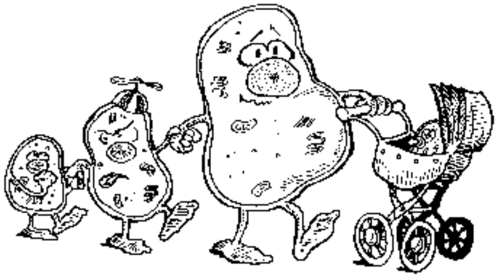

FEMALE REPRODUCTIVE CYCLES
Obimbo MM,
'If there was justice in the world, you wouldn't have to go to school during your period. You'd just stay home for five days and eat chocolate and cry' - Andrea Portes
Objectives
- About the female reproductive cycle:
- Define terms used
- List the phases
- Highlight the main features of each phase
- Clinical application
- Including contraception
Preamble
- Different mammals have different patterns of reproduction
- Different types of cycles:
- Estrous
- Menstrual
- Challenges concerned with female reproductive functions:
- Cause of onset of puberty and development of secondary sexual characteristics
- Establishment and continuance of menstruation
Terms
- Menarche - age of menstruation onset (local data- Ogeng'o and Obimbo, Acta Peadiatrica 2011)
- Menopause - age of final menstruation (local data-Nore et al, East Afr MJ, 1997)
- Overt menstruation - flow of blood from uterus via the vagina
- Covert menstruation- breakdown of endometrium without vaginal bleeding
- Ovulation?
Background
- Cycle:
- Prepares the ovum for fertilization prepares the uterus for implantation
- Control through endocrine system
- Both local and distant hormones facilitate the process
- Negative and positive feedback effects
- Bleeding, breast tenderness and mood swings are characteristics
Hormonal regulation
- Length - 28days
- Concerned endocrine structures
- Role of Pineal gland and Hypothalamus in biological clock
- Hypothalamus
- Pituitary gland
- Ovaries
- Malfunction leads to deranged reproductive cycles
In the Ovary
- Follicular phase
- Ovulation
- Luteal phase
In the Uterus
- Ischemic and Menstruation phase
- Proliferative
- Secretory
Ovarian cycle
- Follicular - recruitment of follicles, growth and maturation, production of hormones - FSH, E2, LH
- Ovulatory - release of the oocyte, LH surge
- Luteal - reorganization of the follicular cells to form corpus luteum, P4, E2
Follicular phase
- Follicular stimulating hormone stimulates maturation of follicles. [14]
- Competition for dominance
- Only one follicle reaches maturation
- Maturing follicles secrete estradiol. [3]
- Estradiol (estrogen) stimulates production of GnRH which causes production of FSH and LH. [9, 10]
- Sloughed endometrium is built up (proliferative phase). [17]
- Day 5-13
Ovulation
- LH causes release of secondary oocyte which matures to ootid then ovum. [9]
- Occurs from day 12-13 and may last 2 days. [4]
- Only one ovum is released from the ovary
- Uptake of the ovum at the fimbria transported to the ampulla
- Fertilization within 36 hrs
Luteal phase
Corpus luteum is significant
Its growth is under influence of LH and FSH. [19]
Produces progesterone and estrogen. [2, 4]
- Progesterone has these effects:
- Prepares endometrium for implantation. [4]
- Causes rise in body temperature. [8]
- The products have negative feedback to LH/FSH production
- Involution of corpus luteum
- Falling levels of progesterone causes sloughing of the endometrium and marks the beginning of a new cycle. [4]
Menstruation phase
- 1st day of menses marks the 1st day of female reproductive cycle. [12]
- Takes place between day 1 to day 6 (3-6 days)
- Maximum of 80 mls of blood is lost (average 35 mls)
- Some heavy losses, (cause aneamia?) painful losses
- Blood does not clot, why?
- Most women are happier, why?
Proliferative phase
- Facilitated by FSH and E2. [17]
- Build up of the stratum functionale
- Renewal of the connective tissue, increase in vascularity
- Thickening of the endometrium. [19]
Secretory phase
Characteristics:
- stroma becomes loose and edematous
- blood vessels entering the endometrium become thickened and twisted
- glands become tortuous and contain secretory material within the lumina
Reason for the name 'secretory phase'
What happens if fertilization takes place?
- Embryo produces human chorionic gonadotropin (hCG). [4]
- Has similar polypeptide sequence as LH
- Maintains corpus luteum and its functions. [4]
- hCG is the specific to human embryo
Changes in other genital structures
Cervix
- endocervical glands (E↑) → mucus (thin, clear, watery) → maximal (ovulation). [23]
- endocervical glands (P↑) → mucus (thick, opaque, tenacious). [4, 23]
Vagina
- Vaginal mucosa (E↑) → thickening and secretory changes
- Vaginal mucosa (P↑) → secrete ↓
Fertility awareness
- Most fertile period of a woman is between day 9-15 of a 28 day cycle. [1]
- Methods used to delineate awareness are: [7]
- Calender based. [8, 13]
- Symptoms based
- Urine kits
Clinical application
- Catamenial epilepsy
- McClintock effect (synchronization of menses)
- Anovulatory cycles
- Menorrhgia, oligomenorrhea, amenorrhea.
- Hormonal contraception
"If women are supposed to be less rational and more emotional at the beginning of menstrual cycle when the sex hormones are their lowest, then why isn't it logical to say that, in those few days, women behave the most like the way men behave all month long?" - Gloria Steinem
Thank you@!